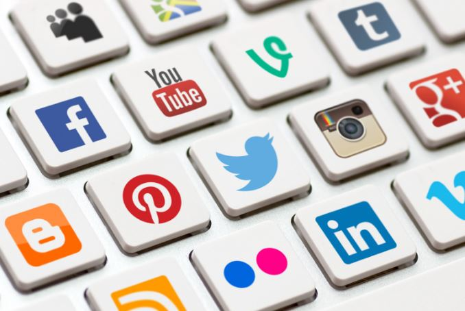
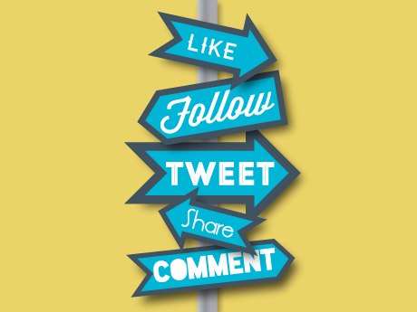

From its very beginning, the world wide web was seen as a social construct, connecting communities of scientist and researchers from all over the world. The more the system grew, the more connected the community became. In 1996, that connectivity took a huge leap forward with the introduction of ICQ, a free instant messaging application. Suddenly, internet users could communicate across any distance in real time. The following year AOL released its own Instant Message program, AIM, popularizing the new technology. 1997 also saw the introduction of the world's first blogs.
During this time, companies also began experimenting with specialized social networks, like Classmates.com, where users who already had an existing connection could reunite and communicate online. Then in 2002, Friendster introduced the world to social networking as we know it today, an online community designed to not only communicate with friends you already have, but to build new relationships through common friends and interests.
In 2003, MySpace and LinkedIn joined the social networking arena. Targeted primarily at young adults with its flashy customizations, music integration, and built-in blogging, MySpace popularized social media to millions of users. Taking a very different approach, LinkedIn targeted the business community, aiming to recreate the after-hours networking environment online. To this day, it remains the world's most popular professional networking site.
Three years later, the world of social media was forever changed with the public release of Facebook. Though it was launched in 2004, the site was restricted to college campuses for the first two years. After going public, the site quickly grew to hundreds of millions of users, and today it boasts over 1.5 billion active users each month.
The success of these early pioneers paved the way for new social media outlets such as Twitter, Pinterest, and Tumblr. Combined with the power of mobile, social networks have also become services, like Uber and Airbnb, allowing users to provide services traditionally only available through large business directly to one another.